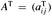
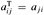

|
|
< Day Day Up > |
|
This chapter presents methods for representing a graph and for searching a graph. Searching a graph means systematically following the edges of the graph so as to visit the vertices of the graph. A graph-searching algorithm can discover much about the structure of a graph. Many algorithms begin by searching their input graph to obtain this structural information. Other graph algorithms are organized as simple elaborations of basic graph-searching algorithms. Techniques for searching a graph are at the heart of the field of graph algorithms.
Section 22.1 discusses the two most common computational representations of graphs: as adjacency lists and as adjacency matrices. Section 22.2 presents a simple graph-searching algorithm called breadth-first search and shows how to create a breadth-first tree. Section 22.3 presents depth-first search and proves some standard results about the order in which depth-first search visits vertices. Section 22.4 provides our first real application of depth-first search: topologically sorting a directed acyclic graph. A second application of depth-first search, finding the strongly connected components of a directed graph, is given in Section 22.5.
There are two standard ways to represent a graph G = (V, E): as a collection of adjacency lists or as an adjacency matrix. Either way is applicable to both directed and undirected graphs. The adjacency-list representation is usually preferred, because it provides a compact way to represent sparse graphs-those for which |E| is much less than |V|2. Most of the graph algorithms presented in this book assume that an input graph is represented in adjacency-list form. An adjacency-matrix representation may be preferred, however, when the graph is dense-|E| is close to |V|2-or when we need to be able to tell quickly if there is an edge connecting two given vertices. For example, two of the all-pairs shortest-paths algorithms presented in Chapter 25 assume that their input graphs are represented by adjacency matrices.
The adjacency-list representation of a graph G = (V, E) consists of an array Adj of |V| lists, one for each vertex in V . For each u ∈ V, the adjacency list Adj[u] contains all the vertices v such that there is an edge (u, v) ∈ E. That is, Adj[u] consists of all the vertices adjacent to u in G. (Alternatively, it may contain pointers to these vertices.) The vertices in each adjacency list are typically stored in an arbitrary order. Figure 22.1(b) is an adjacency-list representation of the undirected graph in Figure 22.1(a). Similarly, Figure 22.2(b) is an adjacency-list representation of the directed graph in Figure 22.2(a).
If G is a directed graph, the sum of the lengths of all the adjacency lists is |E|, since an edge of the form (u, v) is represented by having v appear in Adj[u]. If G is an undirected graph, the sum of the lengths of all the adjacency lists is 2 |E|, since if (u, v) is an undirected edge, then u appears in v's adjacency list and vice versa. For both directed and undirected graphs, the adjacency-list representation has the desirable property that the amount of memory it requires is Θ(V + E).
Adjacency lists can readily be adapted to represent weighted graphs, that is, graphs for which each edge has an associated weight, typically given by a weight function w : E → R. For example, let G = (V, E) be a weighted graph with weight function w. The weight w(u, v) of the edge (u, v) ∈ E is simply stored with vertex v in u's adjacency list. The adjacency-list representation is quite robust in that it can be modified to support many other graph variants.
A potential disadvantage of the adjacency-list representation is that there is no quicker way to determine if a given edge (u, v) is present in the graph than to search for v in the adjacency list Adj[u]. This disadvantage can be remedied by an adjacency-matrix representation of the graph, at the cost of using asymptotically more memory. (See Exercise 22.1-8 for suggestions of variations on adjacency lists that permit faster edge lookup.)
For the adjacency-matrix representation of a graph G = (V, E), we assume that the vertices are numbered 1, 2,..., |V| in some arbitrary manner. Then the adjacency-matrix representation of a graph G consists of a |V| × |V| matrix A = (aij) such that
Figures 22.1(c) and 22.2(c) are the adjacency matrices of the undirected and directed graphs in Figures 22.1(a) and 22.2(a), respectively. The adjacency matrix of a graph requires Θ(V2) memory, independent of the number of edges in the graph.
Observe the symmetry along the main diagonal of the adjacency matrix in Figure 22.1(c). We define the transpose of a matrix A = (aij) to be the matrix  given by . Since in an undirected graph, (u, v) and (v, u) represent the same edge, the adjacency matrix A of an undirected graph is its own transpose: A = AT. In some applications, it pays to store only the entries on and above the diagonal of the adjacency matrix, thereby cutting the memory needed to store the graph almost in half.
Like the adjacency-list representation of a graph, the adjacency-matrix representation can be used for weighted graphs. For example, if G = (V, E) is a weighted graph with edge-weight function w, the weight w(u, v) of the edge (u, v) ∈ E is simply stored as the entry in row u and column v of the adjacency matrix. If an edge does not exist, a NIL value can be stored as its corresponding matrix entry, though for many problems it is convenient to use a value such as 0 or ∞.
Although the adjacency-list representation is asymptotically at least as efficient as the adjacency-matrix representation, the simplicity of an adjacency matrix may make it preferable when graphs are reasonably small. Moreover, if the graph is unweighted, there is an additional advantage in storage for the adjacency-matrix representation. Rather than using one word of computer memory for each matrix entry, the adjacency matrix uses only one bit per entry.
Given an adjacency-list representation of a directed graph, how long does it take to compute the out-degree of every vertex? How long does it take to compute the in-degrees?
Give an adjacency-list representation for a complete binary tree on 7 vertices. Give an equivalent adjacency-matrix representation. Assume that vertices are numbered from 1 to 7 as in a binary heap.
The transpose of a directed graph G = (V, E) is the graph GT = (V, ET), where ET = {(v, u) ∈ V × V : (u, v) ∈ E}. Thus, GT is G with all its edges reversed. Describe efficient algorithms for computing GT from G, for both the adjacency-list and adjacency-matrix representations of G. Analyze the running times of your algorithms.
Given an adjacency-list representation of a multigraph G = (V, E), describe an O(V + E)-time algorithm to compute the adjacency-list representation of the "equivalent" undirected graph G′ = (V, E′), where E′ consists of the edges in E with all multiple edges between two vertices replaced by a single edge and with all self-loops removed.
The square of a directed graph G = (V, E) is the graph G2 = (V, E2) such that (u, w) ∈ E2 if and only if for some v ∈ V , both (u, v) ∈ E and (v, w) ∈ E. That is, G2 contains an edge between u and w whenever G contains a path with exactly two edges between u and w. Describe efficient algorithms for computing G2 from G for both the adjacency-list and adjacency-matrix representations of G. Analyze the running times of your algorithms.
When an adjacency-matrix representation is used, most graph algorithms require time Ω(V2), but there are some exceptions. Show that determining whether a directed graph G contains a universal sink-a vertex with in-degree |V| - 1 and out-degree 0-can be determined in time O(V), given an adjacency matrix for G.
The incidence matrix of a directed graph G = (V, E) is a |V| × |E| matrix B = (bij) such that
Describe what the entries of the matrix product B BT represent, where BT is the transpose of B.
Suppose that instead of a linked list, each array entry Adj[u] is a hash table containing the vertices v for which (u, v) ∈ E. If all edge lookups are equally likely, what is the expected time to determine whether an edge is in the graph? What disadvantages does this scheme have? Suggest an alternate data structure for each edge list that solves these problems. Does your alternative have disadvantages compared to the hash table?
|
|
< Day Day Up > |
|